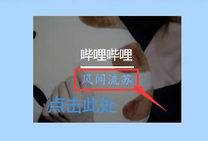

想要夸夸抱抱
古风歌单
A
B
杯欢 彼时天下有蝶 拜无忧 不染 白茶相依-忆平生
C
赤伶 吹梦到西洲 大梦 辞·九门回忆 春不渡
D
丹青客 丹青误 东风志
E
F
浮生未歇
G
故梦 关山酒 皈依
H
何必诗债换酒钱 何而安 红尘 湖心亭 花凋 化身孤岛的鲸 画女 荒唐
J
霁夜茶 见南山 江南调 菁华浮梦 九歌 九万字
K
L
落花时节又逢君
M
梦望断 莫待江湖老 眸阖
N
你是最好的诗人
O
P
Q
千年空城 牵丝戏 琴师 青山入我怀 倾尽天下 清欢怅 清平误
R
人间不值得 若相惜
S
山鬼 山僧 山有山兮 上邪 盛世回首 是风动 双抛桥
T
探水清河
W
忘川 谓风 温柔宇宙 我的一个道姑朋友 万梦星
X
息兮 相思 小城谣
Y
烟雨行舟 杨花落尽子规啼 一拜天地 一介书生 一身诗意千寻瀑 月出 云水谣 玉簪记 有鹿来
Z
这世上所有的歌 醉世客
流行歌单
BINGBIAN病变 love youself what I Could Do
A
爱你不是两三天 爱笑的眼睛 安河桥 暗恋 爱你 暗恋是一个人的事
B
八月十五 白 白羊 宝贝 保留 不找了 不二臣 不打扰 搬心 标题
C
春风十里 椿 大鱼 陈瑞 超人 长安忆
D
大眠 得不到你 地铁等待 独处 迪士尼在逃公主 董小姐 单向箭头 等你的日子不值一提 多情种
E
恶作剧 儿时
F
浮生 飞鸟与蝉 风铃 凡伴
G
感官先生 告白 鸽子 孤记 孤身 莞莞 关于你 隔岸 关键词 勾指起誓
H
好想你 忽然之间 海棠 红豆 海底
I
J
姬和不如 简情歌 静悄悄 旧词 将离 旧诗
K
可不可以 可乐
L
来日方长 离人 里面 love somebdy 绿洲 囹圄 浪子回头
M
美好事物 明天过后 默契 玫瑰 慢慢喜欢你 蜜蜂
N
那就这样吧 男孩 南风北巷 你眸中有一个宇宙 你也没有错 你，好不好 年年 你想要的 你一生的故事 你是年少的欢喜
O
P
陪你度过漫长岁月 偏爱
Q
七月七日晴 其实都没有 起风了 千禧 亲爱的你 青柠 柔软 情歌 桥豆麻袋
R
如常 如果我有一个女朋友 若能等风月枕上满庭秋
S
少一点天分 身骑白马 失眠飞行 失物招领 世间美好与你环环相扣 逝年 嗜好 收信快乐 水星记 说散就散 盛夏 鲨鱼 收敛 拾忆 撒野
T
童话镇 听我 太阳
U
V
W
晚安 晚安喵 往后余生 往往 我曾 我的名字 我的眼里 我可以 我们到最后终于变成朋友 我要你 无人之岛 我走后 我欢喜喜欢你
X
喜欢 夏天的风 像鱼 嚣张 小半 小尾巴 小宇 心安理得 星子 形容 醒着醉 虚拟 心如止水 夏风 香樟 下雨天 想见你想见你想见你
Y
遥远的你 一万万 一直很安静 阴天快乐 樱花草 勇气 淤青 余恨情长 鱼 鱼仔 云烟成雨 鹦鹉 雨后的天空 氤氲 要命 遇见你的时候所有星星都落到我头上
Z
这一生关于你的风景 只只 追光者 最后一页 中产小孩 昼夜船粤语歌单
处处吻 富士山下 李香兰 你瞒我瞒 相依为命 钟无艳 野孩子 遥远的她
甜歌歌单
超喜欢你 恶作剧 好想你 简情歌 青柠 晚安喵 我的眼里 我要你 夏天的风 小尾巴 樱花草 兔子先生
第二杯半价 好像掉进爱情海里 喜欢上你时的内心活动 我的果汁分你一半 遇见你的时候所有星星都落到我头上 在一起嘛好不好
吉他歌单
A
爱笑的眼睛
B
宝贝 白羊 北木南 八月十五 斑马斑马
C
赤伶 椿 成都 春风十里
D
多情种 冬眠 东西 得不到你 等你下课
E
儿时
F
浮生
G
关键词 鸽子凉凉
H
红豆 后会有期海底 好想你 忽然之间 好久不见 好想爱这个世界啊
I
J
九万字 旧词 简情歌 姬和不如
K
可乐 可能否 可不可以
L
浪子回头 理想三旬 旅行的意义
M
蜜蜂 慢慢喜欢你
N
男孩 南山南
O
P
Q
青柠 奇妙能力歌
R
如常
S
拾忆嗜好 逝年 山海 水星记 收信快乐 世间美好与你环环相扣
T
童话镇 突然好想你
U
V
W
我可以 我要你 温柔 无人之岛 晚安 我的名字 往后余生
X
相思 像鱼 醒着醉 嚣张 夏天的风 消愁 小幸运 小酒窝 星月神话 像我这样的人 想见你想见你想见你 我多喜欢你，你会知道
Y
遥远的她 遥远的你 勇气 遇见 樱花草 云烟成雨 一次就好
Z
追光者 纸短情长
更新日志：【GitHub】
如有异常请看此处

copyright©2020 胡日泽